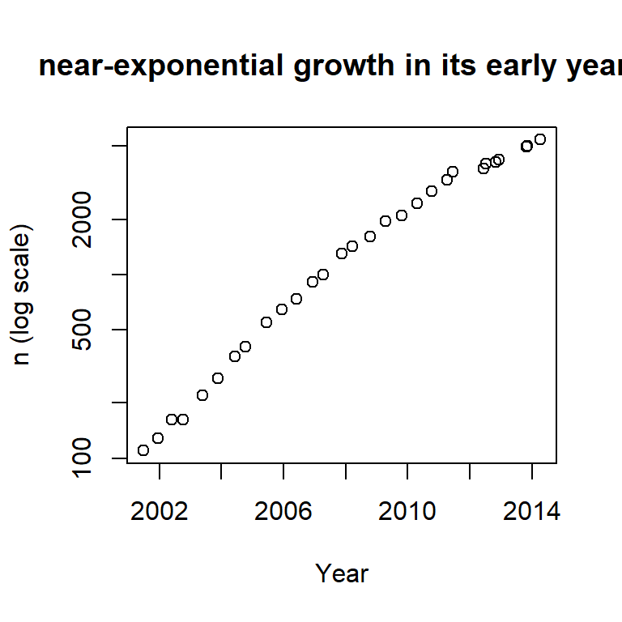

R Packages
Zhaoxia Yu
R Packages
R comes with basic functionality. Packages extend R by adding new functions, datasets, and documentation. Think of packages as “apps for R.”
Example.
| Without packages | With packages |
|---|---|
| Basic plots | Beautiful plots with ggplot2 |
| Basic regression | Survival analysis with survival |
| Read CSV | Read Excel with readxl |
Importance
New statistical methods are often released as R packages before they appear in commercial software.
Many research papers provide an accompanying R package so others can reproduce the analysis.
Today, CRAN hosts over 24,000 active packages.
Packages are one of the biggest reasons R has become so popular among statisticians and data scientists.
Open Source: Procs
- Free
- Thousands of packages
- Rapid development
- Transparent source code
- Community support
- Reproducible research
Open Source: Cons
- No official support
- Quality varies
- Documentation can be inconsistent
- Some packages are no longer maintained
- Different packages may do similar things
- Updates can occasionally break older code
Popular R Packages
UPDATED DAILY. Last updated: 2026-07-07 00:06:18 +1000 Melbourne time (about 9 hours ago)
ggplot2 has been downloaded 191,131,424 times!
Some Famous R Packages
| Package | Purpose |
|---|---|
ggplot2 |
Graphics |
dplyr |
Data manipulation |
tidyr |
Data cleaning |
readr |
Import data |
survival |
Survival analysis |
lme4 |
Mixed models |
glmnet |
LASSO |
shiny |
Web apps |
Types of R Packages - by Purpose
| Type | Examples |
|---|---|
| Data packages | palmerpenguins, nycflights13 |
| Data wrangling | dplyr, tidyr |
| Visualization | ggplot2 |
| Statistical modeling | survival, lme4, glmnet |
| Machine learning | caret, tidymodels, randomForest |
| Reporting | knitr, rmarkdown, Quarto |
| Web applications | shiny |
Types of R Packages
Single packages are designed for a specific purpose and contain a set of functions, datasets, and documentation.
ggplot2– data visualizationdplyr– data manipulationsurvival– survival analysis
A meta-package is a package that contains other packages. A set of related packages can be downloaded at once.
tidyverse- a collection of packages for data science, includingggplot2,dplyr,tidyr, and more.
Is a package good?
A practical checklist:
- Is it on CRAN?
- Is it actively maintained?
- Is it widely used?
- Is there good documentation?
- Is it cited in papers or textbooks?
- Does it have recent updates?
Install and Use a Package
Example: Ecdat
- The package
Ecdatcontains data sets for econometrics. It has a dataset calledCRANpackagesthat contains the number of R packages on CRAN over time.

Example: tidyverse
Example: tidyverse
- Base R version
- Tidyverse version